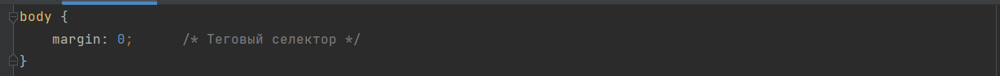
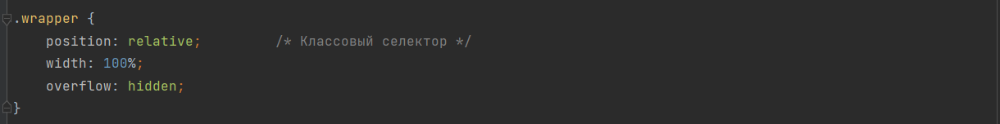
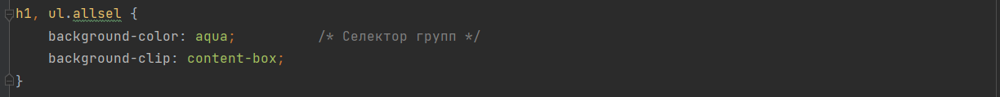
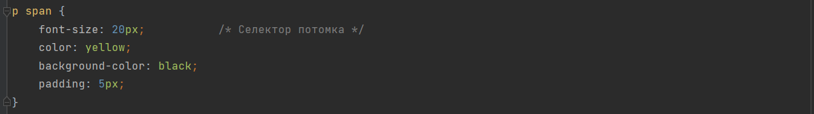
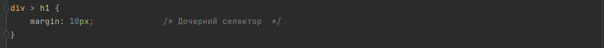
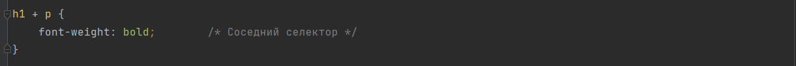
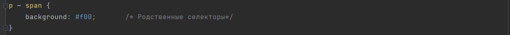
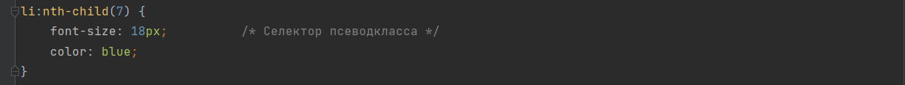
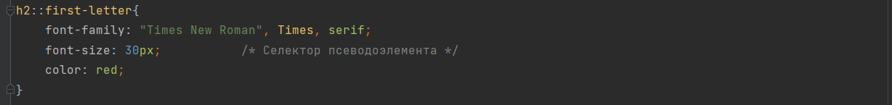

Селекторов много и их все нужно знать
Селекторы бывают:
-
Универсальными
Универсальный селектор (селектор звёздочка) предназначен для выбора всех элементов.
Синтаксис: *
Пример задания правила для всех элементов на странице:

-
Теговыми селекторами
Теговый селектор позволяет задавать стили для всех элементов данного типа (тега).
Синтаксис: a {...}
Пример изменения параметра margin для всех элементов, находящихся внутри тега body:
 -
Классовыми селекторами
Селектор класса - позволяет задавать стили для одного и более элементов с одинаковым именем класса, размещенных в разных местах страницы. Вы можете использовать любое имя для вашего класса, но оно не должно начинаться с цифры..
Синтаксис: .a {...}
Пример задания 3-х параметров для всех элементов, входящим в класс .wraper:
 -
Селекторами идентификатора
Селектор идентификатора- позволяет задавать стили для конкретного элемента (id должен быть уникальным!). Записывается он почти так же, как и класс, только в CSS вместо точки ставится символ решетки #:
Синтаксис: #a {...}
Пример задания параметров для элемента c идентификатором #selector:

-
Селекторами групп
Селекторы групп позволяют задавать стили сразу нескольким элементам.
Синтаксис: a, b, c { … }
Пример задания параметров для заголовка h1 и параграфов р класса "bold":
 -
Селекторами потомка
Селектор потомка - позволяет задавать стили к элементам, расположенным внутри элемента-контейнера;
Синтаксис: a b { ... }
Пример задания параметров для всех span элементов находящихся внутри параграфа p:
 -
Дочерними селекторами
Дочерний селектор - позволяет задавать стили к элементам, которые являются прямыми потомкам (т.е. идут сразу за родительским элементом и между ними нет других элементов);
Синтаксис: a > b { ... }
Пример задания параметра для заголовка h1, который является прямым потомком div:
 -
Соседними селекторами
Cоседние селекторы - выбирает элемент, который находится непосредственно после указанного элемента, если у них общий родитель.
Синтаксис: a + b { ... }
Пример задания параметра для параграфа p, который следует сразу после заголовка h2:
 -
Родственными селекторами
Родственные селекторы - выбирает все элементы, которые находятся после указанного элемента, если у них общий родитель.
Синтаксис: a ~ b { ... }
Пример задания параметра для всех span, которые следуют после заголовка параграфа p:
 -
Селекторами атрибута
Cелектор атрибута - позволяет задавать стили к элементам на основе имени атрибута или значения атрибута;
Синтаксис: a[attr=”value”] { … }
Пример задания параметра для всех ссылок, которые начинаются с https:

-
Селекторами псевдокласса
Псевдоклассы предназначены для более точного выбора элементов в зависимости от их динамического состояния или расположения. С помощью них можно, например, установить стили элементу при поднесении к нему курсора или стилизовать элемент в зависимости от того какой он имеет порядковый номер.
Псевдоклассы — это дополнение к основному селектору, которое позволяет выбрать элемент в зависимости от его особого состояния. Добавляется он к селектору c помощью символа :, т.е. так селектор:псевдокласс.Синтаксис: a:pseudo-class-name { … }
Пример задания параметра для 7-го элемента списка li:
 -
Селекторами псевдоэлемента
Псевдоэлементы ведут себя сходным образом c псевдоклассами, однако они действуют так, как если бы вы добавили в разметку целый новый HTML-элемент, а не применили класс к существующим элементам. Псевдоэлементы начинаются с двойного двоеточия ::.
Синтаксис: a::pseudo-element-name { … }
Пример задания параметра для первой буквы заголовка h2:

В данной работе нужно привести примеры использования данных селекторов
Основных видов селекторов всего несколько:
- * – любые элементы.
- div – элементы с таким тегом.
- #id – элемент с данным id
- .class – элементы с таким классом.
- [name="value"] – селекторы на атрибут.
- :visited – «псевдоклассы», остальные разные условия на элемент.